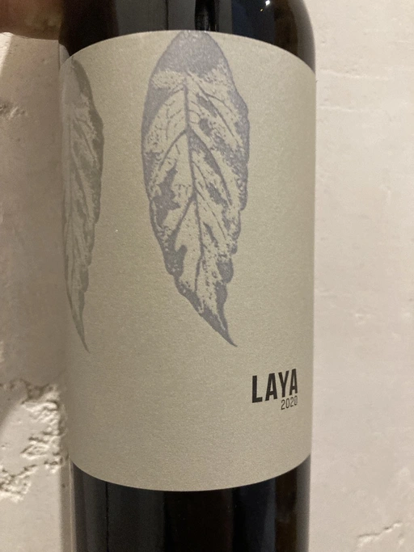

- Type
- Red Still, Dry
- Producer
- Bodegas Atalaya
- Vintage
- 2020
- Location
- Spain, Almansa DO
- Grapes
- Alicante Henri Bouschet, Monastrell
- Alcohol
- 14.5
- Sugar
- 5
- Price
- 269 UAH, 227 UAH
- Cellar
- N/A
Ratings
2021-10-23 - 5.50
This year’ Laya is too young. Restrained bouquet backed up by explosive and flavourful taste. Black currant, dark cherry, medicinal herbs, coffee and black tea. Green, powerful tannin and medium (lacking) acidity. Someone said that Laya is a good base for mulled wine, but its long ethanolic aftertaste is so hot and spicy that it’s almost a mulled wine by itself. It’s good, but clearly lacks balance. And elegance, but no one expect this from wine like this. So as result - perfect drink for winter outdoors.